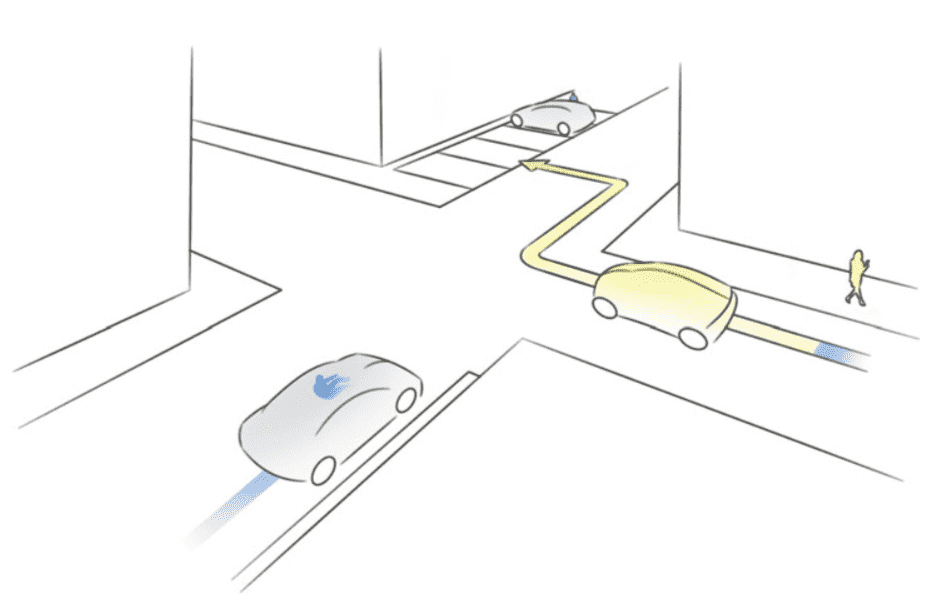
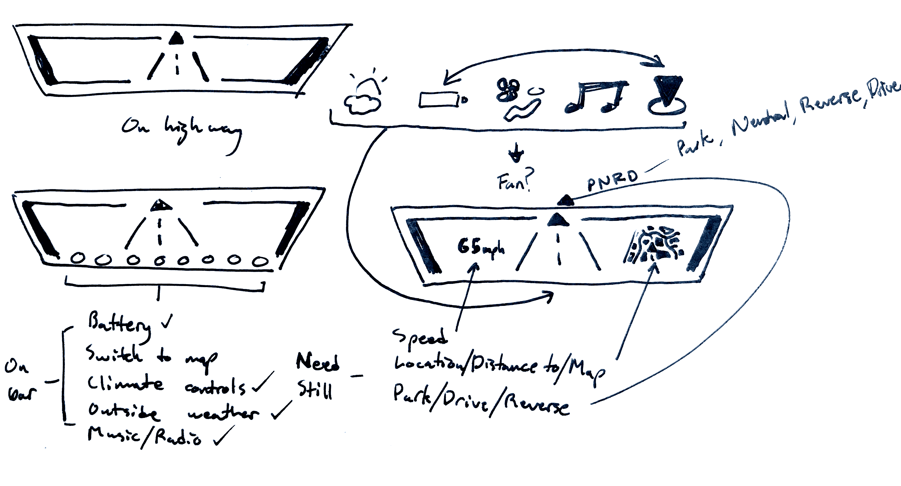

A short concept project for an automotive job interview.
Prompt
We’re 10 years in the future and autonomous vehicles have become the main mode of transportation. An autonomous car company has hired you to design a new digital experience for a car dashboard."
Inspiration
I wanted to read about how people were thinking about use cases for self driving cars before I would begin to think about what the inside of the car is used for. If I could identify a use case I could base the dashboard project around expanding on it.
"The driver saves the time of finding a parking spot as well as of walking to/from a remote parking spot. In addition, access to the vehicle is eased (spatially and temporally). Additional parking space is used more efficiently and search for parking is arranged more efficiently.” Source: Autonomous Valet Parking

"The driving robot drives the vehicle autonomously in all scenarios with occupants, with cargo, but also completely without any payload. The driving robot makes the vehicle available at any requested location. Passengers use the travel time completely independently for other activities than performing the driving task. The cabin is designed completely independently from any restrictions of a driver workplace whatsoever." Source: Autonomous Vehicle On Demand
Direction
I decided that the best dashboard I could visualize was for the process of an autonomous car getting onto a highway and ramping up to speed. Here are the steps I planned to visualize:
- On Highway
- Option to fast travel
- Changing Lanes
- Fast Travel

User Interface
To fit my needs of the highway fast travel use case I needed to sketch icons and screens out to decide on UI elements.


Wireframes
After sketching my ideas out I put together some wireframes to help visualize what this dashboard could look like.


Compositions
After pulling together all the elements of each screen state in wireframes, I crafted some realistic color compositions.


Summary
All that remained was to sketch out the interior view of what a rider would see from the inside of their self driving car and overlay one of the compisitions to finish off the concept.